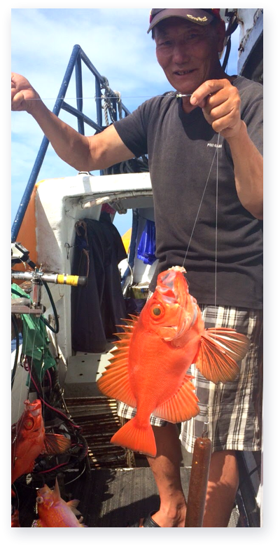
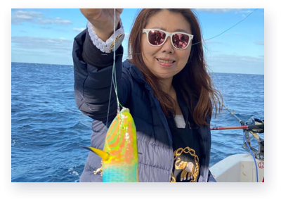

行家們的最愛 日本的磯釣聖地－五島列島
PREVIOUS POST
知名ＤＪ從小迷釣魚 不只釣魚也釣出自己的人生體悟
NEXT POST
基隆嶼國際磯釣賽暖身記者會，達人齊聚共推安全永續觀念
關注我們
加入生活圈
公主888娛樂船
Line
鮮魚管家
Line
公主888
最新文章

知名 DJ 從小迷釣魚
2021 / 07 / 22

讓我們一起基隆趣！ 2020年基隆嶼開放登島注意事項
2021 / 07 / 22

大咬？小搞搞？ 五個釣魚專業術語
2021 / 07 / 22

知名 DJ 從小迷釣魚
2021 / 07 / 22

讓我們一起基隆趣！ 2020年基隆嶼開放登島注意事項
2021 / 07 / 22
文章類別
船釣活動 / 觀光旅遊 (9)
海洋生活 (16)
海鮮好食料理 (7)
購物相關資訊 (3)
其他 (5)
文章標籤
店家推薦
心得
觀光旅遊
漁貨
食譜